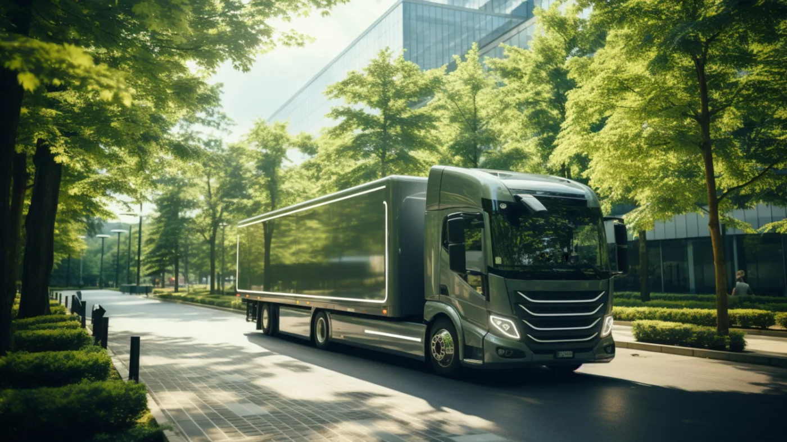

IAA Transportation informó el 1 de septiembre de 2026 que su próxima edición reunirá más de 150 primicias mundiales y productos nuevos. La cifra comprende distintas categorías de la industria: no equivale a 150 modelos nuevos de camiones.
El organizador también anunció 84 vehículos de 17 expositores para pruebas de conducción, un 40% más que en 2024. Más del 70% de los expositores proviene de fuera de Alemania y aproximadamente un tercio participa por primera vez. Entre los temas previstos aparecen nuevas motorizaciones, digitalización y automatización.
La feria se realizará del 15 al 20 de septiembre en Hannover, con jornada de prensa el día 14. Por lo tanto, esta es una noticia sobre la programación confirmada, no una crónica de presentaciones ya realizadas. Las pruebas anunciadas forman parte de esa agenda futura.
Cómo leer una feria internacional desde Argentina
Análisis de Zabala Repuestos. Para un transportista argentino, una exposición internacional puede servir como mapa de tendencias. Permite observar qué problemas buscan resolver los fabricantes y qué soluciones podrían influir en futuras decisiones de compra, mantenimiento o capacitación.
Eso no significa que todo lo exhibido vaya a comercializarse en el país. La pregunta útil no es solamente qué producto aparece, sino para qué mercado, aplicación y etapa comercial está pensado. Esa distinción evita confundir una presentación atractiva con una opción concreta para renovar una flota.
Prototipo, producto de serie y disponibilidad local
Conviene ordenar cada anuncio en tres niveles. Primero, qué se muestra: un concepto, un prototipo o un producto con especificaciones definidas. Segundo, dónde y cuándo se ofrece. Tercero, qué respaldo tendrá en la operación que interesa al comprador.
Una unidad puede estar lista para venderse en un mercado y seguir pendiente de oferta comercial en otro. Tampoco debe suponerse compatibilidad de repuestos por compartir nombre de familia o apariencia exterior. La configuración exacta sigue siendo la referencia para cualquier consulta técnica.
La prueba de conducción aporta, pero no reemplaza al trabajo real
Subirse a un vehículo permite evaluar aspectos que una ficha no transmite con facilidad: acceso, posición de manejo, visibilidad y claridad de los mandos. Sin embargo, una demostración breve no representa por sí sola un mes de operación con carga y recorridos habituales.
Para una comparación posterior sería útil conservar la configuración probada y las condiciones de la experiencia. Si se habla de consumo, autonomía o productividad, hace falta conocer cómo se obtuvieron esas cifras antes de trasladarlas a una ruta argentina.

Los componentes merecen tanta atención como las cabinas
Una mejora relevante no siempre implica cambiar el camión completo. Puede estar en la gestión del mantenimiento, un equipo auxiliar, una carrocería o la forma de consultar información técnica. Mirar solamente los vehículos principales deja fuera una parte importante de la experiencia de uso.
Para un taller, el seguimiento de novedades puede organizarse por sistemas que ya atiende. Así resulta más sencillo identificar qué conocimientos debe actualizar y qué preguntas hacer a sus proveedores, sin tratar cada anuncio como una transformación inmediata de todo el parque.
Qué pedir cuando aparezca una promesa de ahorro
Antes de aceptar un porcentaje, conviene preguntar cuál es la referencia de comparación. También deberían estar claros el período, la carga, el recorrido y los costos incluidos. Dos propuestas con supuestos diferentes no pueden ordenarse solamente por el número más atractivo.
El respaldo merece un lugar propio en esa evaluación: disponibilidad de piezas, diagnóstico, capacitación y asistencia fuera de la base. Una alternativa técnicamente interesante puede necesitar un plan adicional para sostener el servicio donde realmente trabajará.
Una lista breve para seguir las presentaciones
- Nombre exacto del producto y versión mostrada.
- Estado comercial y mercados confirmados.
- Aplicación y condiciones de uso previstas.
- Datos medidos frente a cifras estimadas.
- Requisitos de infraestructura y mantenimiento.
- Representación y soporte por confirmar en Argentina.
Hannover ofrecerá muchos titulares, pero el valor para una empresa está en seleccionar los que respondan a su trabajo. La novedad de esta semana es una agenda más amplia y con más oportunidades de prueba. La decisión práctica vendrá después, cuando cada propuesta pueda contrastarse con recorridos, equipos y respaldo concretos.